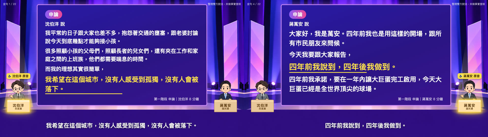
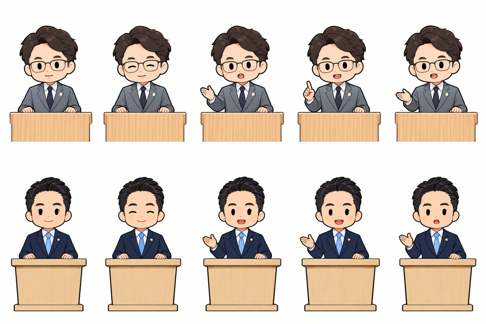

我請 AI 幫忙整理了 2026 台北市長辯論的重點。主要是測試 AI 能力，因為我剛好也想看看摘要重點，原片約 2 小時 16 分。做出來是一支 3 分鐘的懶人包動畫，兩位候選人各 11 句原話金句，螢幕放整段話，聲音只放那一句金句的原音。這篇照順序分享我下的提示詞，記下 AI 踩到的三個坑，最後附一份可以直接複製的完整版。
先講門檻：這次需要能下載影片、執行程式、剪音和生圖的 AI 工具，我用的是 Claude Code 搭 Codex，在自己的電腦上跑。只有文字對話功能的聊天視窗，做不完整套流程。完全不寫程式的人，也可以先學提示詞的下法：怎麼講需求、怎麼要它先給樣張。
- 長影片很多、沒時間看完，想叫 AI 先幫你抓重點的人
- 想試試看 AI 能不能做出一支摘要影片，但不知道從哪一句開始講
- 要整理新聞、活動、課程錄影給別人看，又怕被說斷章取義的人
- 我下過的提示詞，照開頭、立場、內容、畫面、封面、配樂分好段
- AI 踩到的三個坑：逐字稿漏話、數字張冠李戴、配樂忽大忽小
- 一份可以整段複製的完整提示詞，含檢查與確認步驟
我為什麼叫 AI 做摘要影片：測試 AI 能力，也想看重點
我給的第一句話很短，就是貼上影片連結，然後問：
做出來的成片放在我的 Threads，可以直接在這裡播：
接下來的提示詞，都是一邊看 AI 交出來的東西，一邊補上去的。

摘要影片的提示詞，照順序分享
開頭：先講要什麼、長什麼樣子
接著我要它先挑風格、給腳本，我看過再往下做：
風格確認之後，Q 版人物和動作格就交給 AI：它照我選的風格，加上我叫它去看的影片裡兩人的外型，自己請 Codex 生成，再做成動畫。我沒有一張一張指定。

立場：公平客觀
這句是因為我另外丟了一篇網路文章給它參考，那篇的立場很明顯。
這次製作裡，公平性的安排包括：兩人各 11 句；封面照片選同一個階段、同類鏡頭；講台、Q 版畫風兩邊一樣；另外請 Codex 從公平性的角度審了三輪腳本。這些是呈現上的對等，不代表內容就一定客觀，所以後面還是要核對。
內容：直接截金句原話
一開始 AI 給的腳本是用它自己的話轉述。我後來改成直接用原話：
用原話，螢幕上的就是候選人自己說的話。但原話一樣會出錯：誰說的、問答的順序、前後文，還是要核對。下面的坑二就是這種錯。
還有一件事是我一開始沒想到的。動畫原本在每句旁邊標了原片的時間碼，而那份錄影剛好是放在其中一位候選人的頻道上。我怕別人以為我在幫誰站台，所以改成：
時間碼本身有助於核對原話，我只是不把它放在畫面上。AI 剪原音時留了一份對照表，記下每一句在原片的開始和結束時間，要回頭核對時查得到。
畫面：人小小的，螢幕大大的
這是我覺得最關鍵的一句：
這裡的「不要配聲音」是不要旁白，金句原音還是會播。做出來之後，我再補了一輪排版的意見：
封面：第一幀就要能當封面
影片做好後，我發現第一格是空的，因為標題是淡入的。所以我說：
接著再說：
我的想法是：這是新聞，公眾人物，沒差。
配樂：不要忽大忽小
第一版的配樂，在每句金句之間都會突然變大聲。我這樣描述：
最後一句是開頭的節奏：
AI 在背後做了什麼：Claude Code 主做，Codex 畫圖和審稿
我下的都是上面那些話，程式是 AI 自己寫的。AI 在背後做的事，大概是這樣：
滑鼠移到格子或箭頭上，會出現那一步的說明（手機用點的）。
文字版
- 貼連結：我貼上影片連結，說要做成三分鐘的摘要動畫。
- 確認風格：岔出去請 Codex 畫三種風格樣張，我挑一種；風格確認後，Claude 照這個風格和影片裡兩人的外型，請 Codex 畫 Q 版人物，畫好交回來。
- 下載與聽寫：在自己的電腦上轉逐字稿；停頓處漏字，就把那段重新聽寫。
- 挑金句：雙方各 11 句；岔出去請 Codex 審腳本，判需大改就退回修，三輪才通過。
- 剪原音：22 句一句一句剪，每句回轉核對；切到字就重剪。
- 做動畫：逐格錄成影片，配上原音和配樂。
- 我看片：排版、封面、配樂有意見，就退回做動畫那一格再改。
- 成片：3 分 01 秒。
這張圖要看三件事：每一格有自己的檢查，沒過就退回，過了才往下一格；有兩次岔出去，交給第二個模型 Codex 畫圖、審腳本，做完再交回來；逐字稿、挑金句、剪原音這幾格，AI 之前做過類似的事，幾乎都能自己判斷，封面設計和配樂是比較新的，所以後面那幾格比較需要我去處理。
下載、轉逐字稿、挑金句、剪原音、寫程式做動畫，都是 Claude Code；畫人物和公平性審查交給 Codex；最後由我看片、決定要改哪裡。
叫 AI 做摘要影片會踩到的三個坑
坑一：逐字稿把真話吃掉了，要回頭核對原音
辯論中間有幾段停頓，聽寫模型在那裡「幻想」出一串重複、跟辯論無關的字（像是「訂閱」），連後面真正的發言也被蓋掉了。有兩段，分別約 10 秒和 6 秒。
後來把那兩段單獨切出來重新聽寫，才補回真正的內容。所以拿 AI 的逐字稿當依據時，停頓前後那幾句要特別留意。
- AI 交出一份很專業的分析，但它根本沒看過那支影片 叫 AI 摘要影片之前，先確認它到底讀到了什麼
坑二：數字差點張冠李戴，公平性審查才抓到
Codex 第一輪審稿就判「需大改」。它抓到的問題包括：兩個金額數字，腳本寫成是兩個人各講一個，實際上兩個都是同一位候選人講的；有一段問答，前後順序接錯了；兩人的結論句，選得不對等。
這些錯會讓人搞錯誰說了什麼、雙方怎麼回應。換另一家公司的模型來審，就是為了抓這種寫的人自己看不到的錯。三輪的結果依序是：需大改、小修後通過、小修後通過。
- 怎麼設計讓兩個 AI 互審？ 這支影片的公平性審查，用的就是其中一種互審
坑三：配樂忽大忽小
第一版的配樂，是用「有人說話就自動壓低」的效果做的，但是回升得很快，只要 0.5 秒。金句與金句之間只隔一兩秒，配樂就一直彈上彈下。
後來改成照說話的時間軸事先排好：間隔不到 5 秒的句子，合併成同一段「說話區」，整段配樂壓低；說話區以外才變大聲。變小聲、變大聲都花 2.5 秒慢慢變。
摘要影片完整提示詞，可以直接複製
把上面的提示詞整理成一份。這是事後整理的版本，不是當時一次打進去的原文，也加了幾條我從修正過程學到的要求。影片連結換成你自己的：
貼給能下載影片、執行程式、剪音和生圖的 AI 工具，例如 Claude Code。我實際用的是 Claude Code 搭 Codex。
這支摘要影片沒做到的事
- 沒有做事實查核。片頭片尾都寫了「整理雙方說法，未做事實查核」。
- 兩人的句數一樣，但原音秒數沒有完全一樣：一位 66.8 秒，另一位 72.3 秒。
- 22 句金句是 AI 挑的、Codex 審的，但這仍然是一種剪輯。想知道完整脈絡，還是要看 TVBS、三立播出的辯論完整版。
- AI 交出一份很專業的分析，但它根本沒看過那支影片 叫 AI 摘要影片前，先確認它真的讀到內容
- 怎麼設計讓兩個 AI 互審？ 公平性審查用的互審做法
- 影片看完就忘了，怎麼變成用得上的東西？ 同樣從一支 YouTube 出發，做成的是觀點報告網頁
- 我怎麼一句話，就讓我的 AI 把一支專題影片變成一篇深度文章？ 影片的另一種用法：變成一篇文章
想讓 AI 幫你把長影片變成重點？
我每個月有兩場免費線上講座，主題輪流，場次會先在 LINE 社群公布。
場次在 LINE 社群公布。